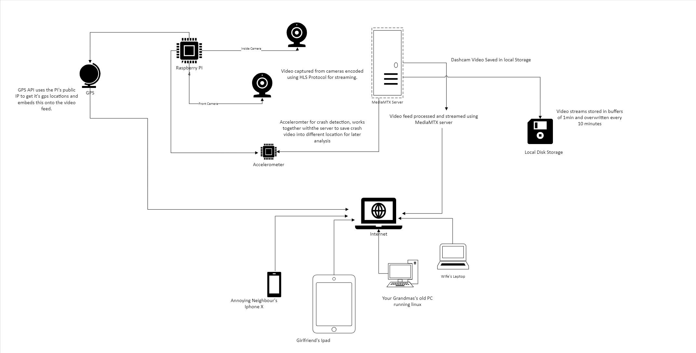
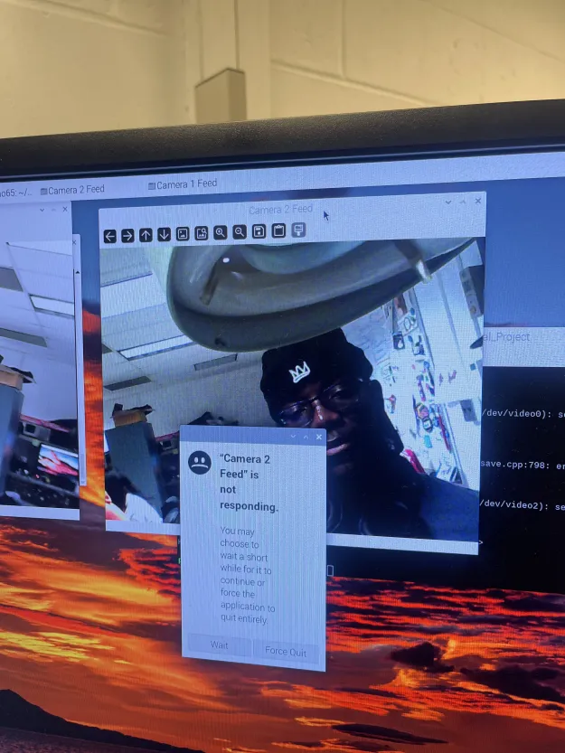
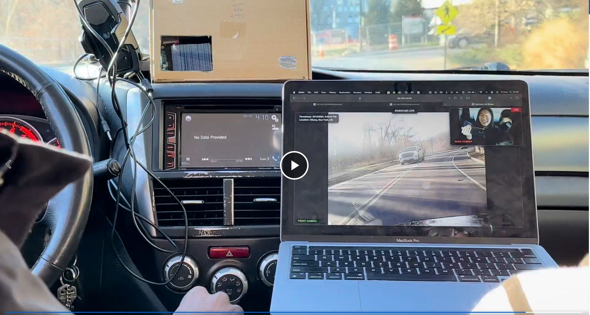

Enhancing Vehicle Safety with Real-Time Crash Detection
A Project by Tony Kariuki(akk85) and Kofi Ohene Adu(kao65).
Demonstration Video
Introduction
This project involves developing a Raspberry Pi 5-based dashcam capable of detecting vehicular crashes
through an accelerometer and securely storing footage for incident review. The system features
real-time video streaming and crash detection algorithms implemented in Python. The technical foundation of the project involves the integration of a Raspberry Pi 5
with a high-definition Pi Camera and an accelerometer. This setup leverages the robust
processing power of the Raspberry Pi 5 to handle high-resolution video streaming and
complex crash detection algorithms.he system uses Python, a versatile programming language, to manage hardware interfacing
and process control. Key libraries such as OpenCV were employed to facilitate video
processing tasks, while the accelerometer data was meticulously analyzed to detect
anomalies indicative of a crash.
Project Objective:
The objective of this project is to develop a Raspberry Pi-based dashcam that not only records driving footage continuously
but also features an innovative crash detection system. This system utilizes an accelerometer
to identify and record potential vehicular accidents in real-time, automatically saving critical
pre- and post-crash footage. The goal is to enhance vehicle safety and provide reliable evidence
for insurance and legal purposes, leveraging cost-effective technology to deliver a
sophisticated safety solution.
Design
A flowchart describing the Workstation Monitoring system operation is shown below:

Figure 1: Flow of Program
The design phase of our Raspberry Pi dashcam project involved setting up the Raspberry Pi with a camera module and an accelerometer. The software was developed to initiate recording upon system startup and continuously monitor acceleration data for anomalies that could indicate a crash.
The dashcam system is built around three core components: the Raspberry Pi 5, the Pi Camera, and an accelerometer. The Raspberry Pi 5 serves as the central processing unit, handling both the video streaming and the crash detection functionalities. The Pi Camera, connected via a CSI (Camera Serial Interface) port, captures high-definition video footage, which is processed and stored in real-time. The accelerometer is crucial for detecting sudden changes in vehicular motion that may indicate an accident.
Our hardware configuration includes the Raspberry Pi 5 for its enhanced processing capabilities essential for handling high-definition video data and running complex algorithms without lag. The Pi Camera provides high-resolution video capture, integral for recording clear and usable footage. The accelerometer monitors three-axis movements to detect anomalies typical of crashes, such as abrupt stops or collisions.
On the software side, the stack includes the Raspberry Pi OS, optimized for performance and stability. Python is used as the programming language due to its robust libraries and ease of integration with hardware components. Video processing is managed with OpenCV, supporting various functions vital for real-time applications. A crash detection algorithm, developed in Python, analyzes data from the accelerometer to detect potential crashes, setting thresholds for acceleration values that, when exceeded, trigger the system to save the current video footage to a secure location.
Video data is continuously recorded in segments and stored on a microSD card within the Raspberry Pi. In the event of a crash, the system tags the relevant footage segments before and after the incident, ensuring they are not overwritten. The design includes a mechanism for easy retrieval and review of tagged video files, facilitating their use in post-incident analysis.
A key consideration in the power management design was ensuring that the dashcam could operate continuously without draining the vehicle’s battery. Power management strategies include using a dedicated power supply that connects to the vehicle’s ignition system, allowing the dashcam to power down safely when the vehicle is turned off and to boot up when the ignition is started.
Testing
The testing phase for the Raspberry Pi-based dashcam system involved extensive validation in both controlled and real-world environments. The tests ensured that individual components worked as intended, the system operated seamlessly as a whole, and the dashcam performed reliably under various driving conditions.

Figure 2: Hardware testing and debugging of the cameras
Bench testing was conducted to verify the functionality of the camera, accelerometer, and power management system individually. Integration testing followed to confirm synchronized operation between hardware and software components, particularly the crash detection algorithm and video recording capabilities.
Figure 3: Both cameras working in Lab Setup
During field testing, the dashcam system was evaluated in real-world driving scenarios. The crash detection algorithm was tested for accuracy against
sudden stops, accelerations, and minor shocks, ensuring it reliably identified crash events without generating false positives.
Continuous operation tests validated system stability over extended periods, with video footage saved securely and tagged
appropriately for pre- and post-crash incidents.

Figure 4: Road test! Dashcam stream accebile online via mediaMTX server using HLS Protocol
During integration testing, the OBD-II device encountered issues due to a Bluetooth configuration mismatch between the car and the Raspberry Pi. This resulted in a failure to retrieve vehicle telemetry data, limiting the functionality of crash detection enhancements using OBD-II data. Future work may address resolving this compatibility issue.
Power management testing confirmed efficient energy usage. The system successfully powered up automatically when the vehicle ignition was started and safely shut down when the vehicle was turned off. The 5V power bank provided stable power, enabling uninterrupted operation without significant battery drain.
Overall, the testing phase demonstrated that the dashcam system performed reliably, detecting crash scenarios accurately, saving critical footage, and maintaining continuous operation without overheating or power failures.
Result
The Raspberry Pi-based dashcam system successfully achieved its design goals. During controlled testing and field trials, the system reliably detected all simulated crash scenarios and responded appropriately by securely saving the critical pre- and post-crash footage. The saved footage was easily accessible and stored without any corruption or overwriting issues.
The real-time crash detection algorithm demonstrated accuracy and consistency, with no false positives observed during regular driving activities, including braking, accelerating, and turning. The accelerometer data thresholds were fine-tuned to differentiate between normal driving conditions and potential crash events effectively.
During integration testing, the OBD-II device encountered issues due to a Bluetooth configuration mismatch between the car and the Raspberry Pi. This resulted in a failure to retrieve vehicle telemetry data, limiting the functionality of crash detection enhancements using OBD-II data. Future work may address resolving this compatibility issue.
Power management tests confirmed that the system operated continuously without any overheating issues or significant power drain. The 5V power bank provided reliable power throughout extended operation, ensuring the dashcam functioned without interruptions.
Overall, the project met its objectives and demonstrated the feasibility of implementing a low-cost, high-performance dashcam system with crash detection capabilities. The system is scalable, with room for enhancements in future iterations.
While the dashcam system successfully achieved most of its objectives, the OBD-II integration failed during testing due to a Bluetooth configuration mismatch between the car and the Raspberry Pi. This issue prevented the retrieval of vehicle telemetry data for enhanced crash detection and incident analysis.
Future Work
Future enhancements could include integrating cloud storage options, improving low-light video capture, refining crash detection algorithms, optimizing power management, and developing a mobile app for easier access and management of stored video footage.
Resolving the Bluetooth compatibility issues with the OBD-II device is a key area for future development. This would enable the retrieval of vehicle telemetry data, enhancing the system’s crash detection capabilities and providing additional insights during incidents.
Work Distribution
Tony, as the lead software engineer, was responsible for several key components of the project. He developed
the software necessary for streaming video from the Raspberry Pi camera in real-time and configured the MediaMTX
server to ensure stable and efficient video transmission. Additionally, Tony created a webpage to host the live stream
of the dashcam video, providing a user interface for remote monitoring, and integrated a GPS API to display
real-time location data, enhancing the dashcam's utility with geographic tracking capabilities. Kofi handled the hardware aspects of the project as the lead hardware engineer. He connected and configured
the accelerometer, essential for crash detection, and integrated OBD-II to gather vehicle data, enhancing
system diagnostics. Kofi also set up a power management system using an external 5V power bank to ensure
the system's continuous operation and managed a hard disk for secure video storage and retrieval.